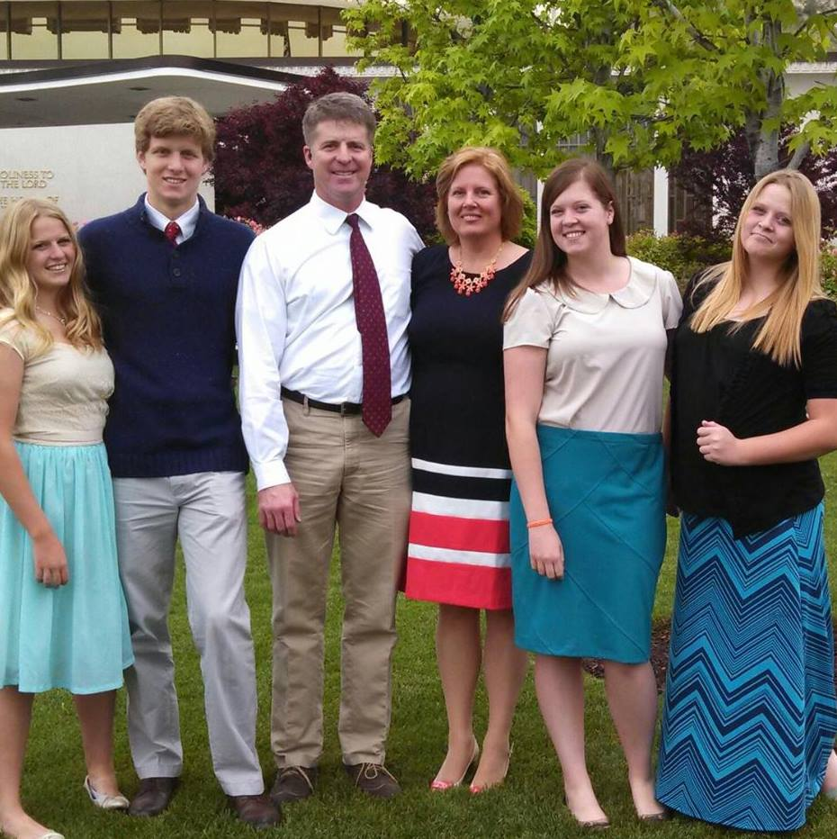

Our Leadership Team
Professional, highly-experienced dental care leaders

Dana Wallace
Founder & CEO
When not with patients and managing her company Dana is found in Mountains, Rivers, Slots, and Canyons.
Dana Wallace is the visionary founder and driving force behind Dental On Location, a pioneering company revolutionizing dental care for assisted living facilities. With a deep sense of empathy and a passion for improving dental practices in eldercare, Dana embarked on a mission to create a solution that would transform the way dental care is delivered to seniors in assisted living settings.
Drawing upon her more than 18 years of experience in sales and management within the dental industry, Dana leveraged her expertise to develop innovative business models tailored to the unique needs of assisted living facilities. As the Director of Business Development, Dana successfully implemented strategic plans that propelled Dental On Location to the forefront of the industry.
Dana's unwavering commitment to excellence and her relentless pursuit of better dental care solutions have earned her recognition as a visionary leader in the field. Driven by Dana's vision and guided by her leadership, Dental On Location is poised for national expansion, with a commitment to delivering compassionate, high-quality dental care that transforms lives and enhances the well-being of seniors across the country.

Dr. Paul Benson
Chief Clinical Officer
Dr. Paul Benson's illustrious career spans over two decades of dedicated service as an oral and maxillofacial surgeon, during which he has earned widespread recognition for his exceptional expertise and contributions to the field. Beyond his clinical practice, Dr. Benson has made significant strides in the realm of healthcare innovation, notably pioneering the development of cooperative health share plans, global mobile commerce systems, and crowdfunding platforms.
As the proud owner of the Davis Center for Oral and Maxillofacial Surgery for nearly 12 years, Dr. Benson has demonstrated a remarkable ability to lead and innovate within the healthcare sector. Drawing upon his wealth of experience and expertise, Dr. Benson plays a pivotal role at Dental on Location, where he leverages his strategic acumen to assist in the establishment of corporate dental services.
Through his guidance, companies can seamlessly transition into the realm of onsite dental care, unlocking unparalleled convenience and accessibility for employees. Dr. Benson's unwavering commitment to excellence and his relentless pursuit of innovation continue to shape the landscape of corporate healthcare.

Dr. David Cannon
DDS
Dr. Cannon's journey began with a diverse upbringing, spanning California, Alabama, and Scotland during his early childhood before settling in Salt Lake City at the age of eight. His worldly experiences continued with a mission trip to the Dominican Republic for his church, where he honed his fluency in Spanish. Dr. Cannon's academic pursuits led him to graduate from the University of Utah with a BA in Medical Biology in 1996, laying the foundation for his future in dentistry.
Following his undergraduate studies, Dr. Cannon pursued his passion for dentistry at West Virginia University, where he graduated from dental school in 2000. Eager to enhance his skills, he completed a one-year postgraduate program at the Martinsburg VA Med Center in West Virginia, specializing in advanced techniques in general dentistry. In October 2002, Dr. Cannon realized his dream of entrepreneurship by founding Pinnacle Dental, where he thrives on the challenges and rewards of small business ownership.
Outside of the office, Dr. Cannon finds joy in the company of his beloved wife, Sylvia, and their three children, and delights in family activities and the exhilaration of snow skiing during his leisure time.

Marie Peterson, DMD
DMD
Dr. Marie Peterson was born and raised in Utah. She attended Southern Utah University where she received her bachelor's degree in engineering design. She worked in this field for several years before attending Utah Valley University, where she completed pre-dental courses and biology research.
She attended Roseman University of Dental Medicine in South Jordan, Utah. Dr. Peterson then completed a General Practice Residency at the University of Utah.
Peterson loves spending time with her family in nature. They enjoy camping, hiking, biking, and discovering new places. She has always been artistic and enjoys using her creativity within the dental profession. She is listed as one of the top 50 dentists in Utah by the American Society of Dentists.

Michael Rowe, DDS
DDS
Dr. Michael Rowe is a resident of St. George, Utah and a proud father of four. He brings dedicated dental care to the communities he serves with a commitment to quality and compassion.

Shane Wallace
Director of Marketing/Patient Relations
Shane Wallace, Director of Marketing/Patient Relations, is a consummate professional driven by his unwavering passion for delivering unparalleled customer service in the healthcare sector.
With a keen eye for detail and a commitment to excellence, Shane meticulously analyzes day-to-day operations within clinical settings, ensuring that every aspect of the patient experience is optimized for maximum satisfaction.
His astute understanding of the intricacies of healthcare operations enables him to implement best practices that not only benefit patients but also enhance the overall efficiency and effectiveness of facility operations.